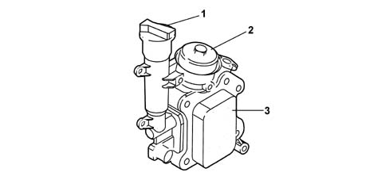
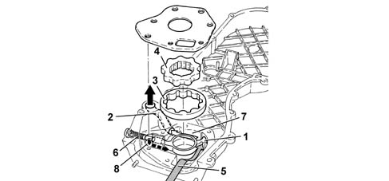

1084B engine oil lubrication circuit
- Path
- Descriptions > 10 ENGINE > 1084 ENGINE LUBRICATION SYSTEM > 1084B engine oil lubrication circuit
- Kind
- system description
- Applies to
- engines: 1.3 JTD; all production periods
- Interactive page
- https://sloeber94.github.io/elrnDB-lYpsln/en/#/2427407
Applies to: engines: 1.3 JTD; all production periods
OIL FILTER AND HEAT EXCHANGER UNIT
This unit comprises both the filter element and the heat exchanger; the oil filler plug is on the side.

1 - Oil filler plug 2 - Filter element cover 3 - Water oil heat exchanger
Applies to: engines: 1.3 JTD; all production periods
ENGINE OIL PUMP
The engine oil is drawn in from the sump by means of the vacuum created by the rotation of the sprockets fitted on the crankshaft.
Vacuum is present between the sprocket separating wall (2) and the oil sump suction pipe.
Pressure instead develops after the separating wall (1) in all the oil delivery pipes (2).
When the pressure exceeds 5 bar, the force exerted on the limiting valve (6) overcomes the reaction of the spring below and moves the valve to open the connecting pipe (8) between the pressure chamber (7) and the low pressure chamber (5).

1 - Separating wall 2 - Oil delivery pipe 3 - Driven sprocket 4 - Drive sprocket 5 - Low pressure chamber 6 - Limiting valve 7 - Pressure chamber 8 - Connecting pipe between high and low pressure